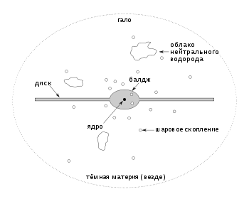

Галактика

Гала́ктика — гравитационно связанная система из звёзд, звёздных скоплений, межзвёздного газа и пыли, тёмной материи, планет. Все объекты в составе галактики участвуют в движении относительно общего центра масс
Все галактики (за исключением нашей) — чрезвычайно далёкие астрономические объекты. Расстояние до ближайших из них измеряют в мегапарсеках, а до далёких — в единицах красного смещения z . Самой удалённой из известных по состоянию на 2022 год является галактика CEERS-93316. Разглядеть на небе невооружённым глазом можно всего лишь четыре галактики: галактика Андромеды (видна в северном полушарии), Большое и Малое Магеллановы Облака (видны в южном; являются спутниками нашей Галактики) и галактика М33 в созвездии Треугольника (из северного полушария, на незасвеченном небе)[5].
Общее количество галактик в наблюдаемой части Вселенной пока точно не известно. В 1990-х годах, основываясь на наблюдениях космического телескопа «Хаббл», считали, что всего существует порядка 100 миллиардов галактик[6]. В 2016 году эту оценку пересмотрели и увеличили число галактик до двух триллионов[7]. В 2021 году по новым данным, полученным космическим аппаратом New Horizons, оценка числа галактик была вновь уменьшена, и теперь составляет всего несколько сотен миллиардов[8].
В пространстве галактики распределены неравномерно: в одной области можно обнаружить целую группу близких галактикПерейти к разделу «#Крупномасштабные объединения галактик», а можно не обнаружить ни одной (так называемые войды). Получить изображение галактик до отдельных звёзд не удавалось вплоть до начала XX века. К началу 1990-х годов насчитывалось не более 30 галактик, в которых удалось увидеть отдельные звёзды, и все они входили в Местную группу. После запуска космического телескопа «Хаббл» и ввода в строй 10-метровых наземных телескопов число разрешённых галактик резко возросло. Галактики отличаются большим разнообразием: среди них можно выделить сфероподобные эллиптические галактики, дисковые спиральные галактики, галактики с перемычкой (баром), линзовидные, карликовые, неправильные и т. д.Перейти к разделу «#Морфология». Если же говорить о числовых значениях, то, к примеру, их масса варьируется от 0,5 ⋅106 масс Солнца у карликовых галактик (таких как Segue 2) до 2,5⋅1015 масс Солнца у сверхгигантских галактик (таких как IC 1101), для сравнения — масса нашей галактики Млечный Путь равна 2⋅1011 масс Солнца.
Содержание
- 1 Этимология
- 2 Наблюдения
- 2.1 Расстояние
- 2.2 Основные наблюдаемые составляющие галактик
- 2.3 Скорость вращения галактик
- 2.4 Масса и размер
- 2.5 Спектр галактики
- 2.6 Проблема тёмного гало
- 3 Морфология
- 4 Крупномасштабные объединения галактик
- 5 Процессы
- 5.1 Столкновение
- 5.2 Процессы в активных ядрах
- 5.3 Движение газа и звёзд
- 5.4 Явление гравитационного линзирования
- 5.4.1 Определение расстояния по гравитационным линзам
- 5.4.2 Поиск тёмной материи в скоплениях галактик
- 5.4.3 Поиск далёких галактик
- 6 Млечный Путь
- 7 История изучения галактик
- 8 См. также
- 9 Примечания
- 10 Литература
- 11 Ссылки
Этимология
Слово «гала́ктика» (др.-греч. γαλαξίας) происходит от греческого названия нашей Галактики (κύκλος γαλαξίας означает «молочное кольцо» — как описание наблюдаемого явления на ночном небе)[12]. Когда астрономы предположили, что различные небесные объекты, считавшиеся спиральными туманностями, могут быть огромными скоплениями звёзд, эти объекты стали называть «островными вселенными» или «звёздными островами». Но позже, когда стало понятно, что эти объекты похожи на нашу Галактику, оба термина перестали использоваться и были заменены на термин «галактика».
Расстояние
Расстояние от наблюдателя до галактики как физическая характеристика не входит ни в один процесс, происходящий с галактикой. Необходимость в информации о расстоянии до галактики возникает при: отождествлении малоизученных событий, например, гамма-всплесков; изучении Вселенной как целого, изучении эволюции самих галактик, определении массы галактик и их размеров и т. п. Все более-менее моделенезависимые способы определения расстояния до галактики можно разделить на два типа: измерение по объекту внутри галактики, расстояние до которого на пренебрежимо малую величину отличается от расстояния до самой галактики, и по красному смещению.
Существует также ряд сильно моделезависимых способов
Основные наблюдаемые составляющие галактик
Основные наблюдаемые составляющие галактик включают[
- Нормальные звёзды различных масс и возрастов, часть которых заключена в скоплениях.
- Компактные остатки проэволюционировавших звёзд.
- Холодная газопылевая среда.
- Наиболее разрежённый горячий газ с температурой 105—106 К.
Двойные звёзды в соседних галактиках не наблюдаются, но, судя по окрестностям Солнца, кратных звёзд должно быть достаточно много. Газопылевая среда и звёзды состоят из атомов, и их совокупность называют барионной материей галактики. В небарионную включается масса тёмной материи и масса чёрных дыр
Скорость вращения галактик
Под скоростью вращения галактики подразумевается скорость вращения различных компонентов галактики вокруг её центра. Данная скорость — это суммарная скорость, приобретённая в ходе различных процессов. Скорость вращения галактики следует отличать от круговой скорости Vc, которая обусловлена только силой гравитации и равна, по определению, необходимой скорости тела, движущегося по кругу под действием силы притяжения к центру. Скорость же вращения в общем случае обусловлена также радиальным градиентом давления P межзвёздного газа.
Для разных компонентов галактики скорость вращения оценивается по-разному. Для газа — по доплеровскому смещению эмиссионных линий. Для звёзд — по доплеровскому смещению абсорбционных линий звёзд. Схема получения скорости вращения следующая. Непосредственно получаемая из наблюдений скорость — это сумма скорости движения галактики как целого и скорости внутреннего движения. Обычно скорость галактики в целом (V0) отождествляется со скоростью движения центральной области. Для далёких галактик эта скорость обусловлена хаббловским расширением Вселенной, собственная скорость пренебрежимо мала.
Скорость, получившаяся после учёта скорости движения галактики как целого, — скорость по лучу зрения (Vr), и чтобы вычислить скорость вращения галактики на данном расстоянии, необходимо учесть эффекты проекции. Для этого необходимо знать угол наклона оси галактики к лучу зрения i, а также угол φ между большой осью галактики и прямой, проходящей через центр галактики и наблюдаемую точку. Таким образом, чтобы перейти от Vr к Vφ, необходимо знать пять параметров: скорость движения галактики V0, углы i и φ, две координаты центра галактики (относительно любой точки изображения).
В марте 2018 года астрономы из Международного центра радиоастрономических исследований (ICRAR) выяснили, что все галактики, независимо от своего размера или типа, вращаются с одинаковой скоростью и совершают полный оборот вокруг своей оси за 1 млрд земных лет
Масса и размер
Галактики не имеют чётких границ. Нельзя точно сказать, где кончается галактика и начинается межгалактическое пространство. К примеру, если в оптическом диапазоне галактика имеет один размер, то определяемый по радионаблюдениям межзвёздного газа радиус галактики может оказаться в десятки раз больше. От размера зависит и измеряемая масса галактики. Обычно под размером галактики понимают фотометрический размер изофоты 25-й звёздной величины с квадратной угловой секунды в фильтре B. Стандартное обозначение такого размера — D25[18]. Масса дисковых галактик оценивается по кривой вращения в рамках некой модели. Выбор оптимальной модели галактики опирается как на форму кривой вращения, так и на общие представления о структуре галактики. Для грубых оценок массы эллиптических галактик необходимо знать дисперсию скоростей звёзд в зависимости от расстояния от центра и радиальное распределение плотности[19]. Масса холодного газа в галактике определяется по интенсивности линии H I. Если регистрируемая плотность потока излучения от галактики или какой-либо её части равны
Спектр галактики
Спектр галактик складывается из излучения всех составляющих её объектов. Спектр среднестатистической галактики имеет два локальных максимума. Основной источник излучения — это звёзды, максимум интенсивности излучения большинства из них находится в оптическом диапазоне (первый максимум). Обычно в галактике много пыли, которая поглощает излучение в оптическом диапазоне и переизлучает его в инфракрасном диапазоне. Отсюда второй максимум — в инфракрасной области. Если светимость в оптическом диапазоне принять за единицу, то наблюдается следующая зависимость между источниками и типами излучения[
Проблема тёмного гало
Если вся масса галактик заключена в звёздах, то, зная соотношение масса-светимость и предполагая, что оно не сильно меняется с радиусом, плотность вещества в галактике можно оценить по яркости звёздного населения.
Ближе к своему краю галактика тускнеет, значит, и средняя плотность звёзд падает, а вместе с ней должна упасть и скорость вращения звёзд. Однако наблюдаемые кривые вращения галактик свидетельствуют о кардинально иной картине: начиная с какого-то момента скорости вращения звёзд аномально высоки для плотности
заставляют предполагать, что размер тёмного гало в несколько раз больше,получаемой из зависимости масса-светимость. Объяснить высокую скорость звёзд у края диска можно, предположив, что на больших расстояниях от центра чем оптический диаметр галактики. Присутствие массивных тёмных гало было обнаружено в галактиках всех типов, но в различных пропорциях по отношению к светящемуся веществу
галактики основную роль играет масса, проявляющая себя исключительно через гравитационное взаимодействие. Независимым образом можно прийти к выводу о наличии скрытой массы, если оценивать общую массу исходя из условия устойчивости звёздного диска. Измерения скоростей движений спутников массивных
Морфология

Ядро — крайне малая область в центре галактики. Когда речь заходит о ядрах галактик, то чаще всего говорят об активных ядрах галактик, где процессы нельзя объяснить свойствами сконцентрированных в них звёзд.
Диск — относительно тонкий слой, в котором сконцентрировано большинство объектов галактики. Подразделяется на газопылевой диск и звёздный диск.
Полярное кольцо — редкий компонент. В классическом случае галактика с полярным кольцом имеет два диска, вращающихся в перпендикулярных плоскостях. Центры этих дисков в классическом случае совпадают. Причина возникновения полярных колец до конца не ясна
Бар (перемычка) — выглядит как плотное вытянутое образование, состоящее из звёзд и межзвёздного газа. По расчётам, главный поставщик межзвёздного газа к центру галактики. Однако почти все теоретические построения основываются на факте, что толщина диска много меньше его размеров, иными словами, диск плоский, и почти все модели — упрощённые двумерные модели, расчётов трёхмерных моделей дисков крайне мало. А трёхмерный расчёт галактики с баром и газом в известной литературе всего один[24]. По данным автора данного расчёта, газ не попадает в центр галактики, а проходит довольно далеко.